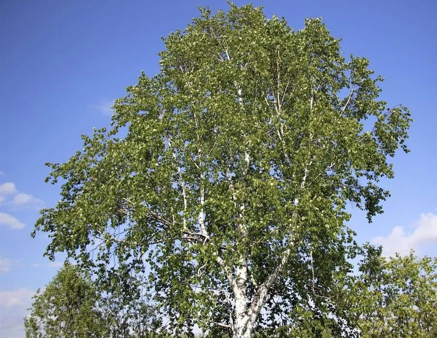

乔木 · 植物界
白桦 Betula platyphylla

树皮洁白、可层层剥落的落叶乔木，是我国北方森林与俄罗斯民间艺术中的标志性树种，秋季满树金黄，十分醒目。
- 分类
- 门被子植物门纲木兰纲目壳斗目科桦木科属桦木属
- 栖息环境
- 海拔 500–2000 米的山坡、沟谷与林缘，喜光耐寒，常生于采伐迹地
- 地理分布
- 中国东北、华北、西北山地及朝鲜半岛、日本、俄罗斯远东
- 保护级别
- 暂无评估；中国未列入国家重点保护野生植物名录
物种志
白桦为落叶乔木，高可达 25 m，树皮灰白色、纸质并呈薄片状剥落，剥落后露出粉白色内皮，树干上常带黑色横向皮孔。单叶互生，叶片三角状卵形或菱状卵形，边缘具重锯齿，侧脉 5–8 对，叶柄细长。雌雄同株，葇荑花序于春季与叶同时开放，果实为小坚果，两侧具膜质翅，成熟后随风散落，能在空旷地上迅速更新。
白桦广布于中国东北、华北及西北的山地，也见于朝鲜半岛、日本与俄罗斯远东，常成片生长于采伐迹地、火烧迹地与山坡，是森林更新的先锋树种。它喜光、耐寒，可耐 −40 ℃ 低温，对土壤适应性强。木材可供建筑、胶合板与造纸；树皮可提取桦皮油、制作桦皮器物；春季树液可制饮料；树形清秀，是北方园林常见的观赏树。
形态与习性
- 株高可达 25 m，胸径可达 40 cm
- 花期5–6 月，与叶同时开放
- 果期7–8 月，小坚果具膜质翅
- 光照喜光，不耐庇荫
- 水分耐旱，也耐短期水湿
- 土壤适应性强，酸性至微碱性土壤均可生长
- 主要用途胶合板与纸浆用材、桦皮工艺、树液制饮料
趣味知识
- 白桦树皮含有白色桦木素，可用火点燃，即使雨雪天也能当引火材料。
- 白桦是森林火灾或采伐后的先锋树种，种子轻小带翅，能迅速占领空地。
- 俄罗斯民间用白桦树皮编织器具、制作器物，甚至用作书写材料。
- 在北欧与俄罗斯，白桦树液被收集起来，作为春季的天然饮料。